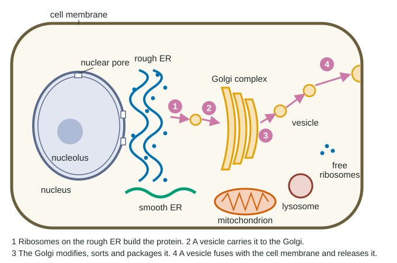

A cell is the smallest thing that is alive. It takes in materials, uses energy, builds its own parts, responds to its surroundings and, eventually, makes more cells. This page walks through the parts of a cell one at a time and shows how the shape of each part fits its job. By the end you should be able to look at a cell and predict what it does for a living.
Two kinds of cells
All cells share four things: a cell membrane around the outside, cytoplasm filling the inside, DNA carrying the instructions, and ribosomes that build proteins. Beyond that, cells come in two basic designs.
A prokaryote is a small, simple cell. Its DNA sits in the cytoplasm with no membrane around it, and it has no membrane-bound organelles. Bacteria and archaea are prokaryotes. Most are 0.1 to 5 µm across, small enough that molecules can spread from one side of the cell to the other quickly.
A eukaryote keeps its DNA inside a nucleus and divides its cytoplasm into organelles, each wrapped in its own membrane. Animals, plants, fungi and protists are eukaryotes. Their cells are usually 10 to 100 µm across, about ten times wider than a typical prokaryote.
| Feature | Prokaryotic cell | Eukaryotic cell |
|---|---|---|
| Examples | Bacteria, archaea | Animals, plants, fungi, protists |
| Typical size | 0.1-5 µm | 10-100 µm |
| Where the DNA is | In the cytoplasm, no membrane around it | Inside a nucleus |
| Membrane-bound organelles | None | Many (ER, Golgi, mitochondria...) |
| Ribosomes | Yes | Yes |
| Cell membrane and cytoplasm | Yes | Yes |
| Cell wall | Most have one | Plants (cellulose) and fungi (chitin); animal cells have none |
The nucleus and the ribosomes
The nucleus holds the cell's DNA, packed with proteins into chromosomes. It is wrapped in a double membrane, the nuclear envelope, which is crossed by nuclear pores that let large molecules in and out.
A gene's instructions leave the nucleus as a copy called messenger RNA (mRNA). In the cytoplasm, ribosomes read the mRNA and link amino acids, in the order it spells out, into a protein. Using a gene this way to make its protein is called gene expression. You will learn the details in Unit 6; for now, remember the direction: DNA in the nucleus, mRNA out through a pore, protein built on a ribosome.
A ribosome is not wrapped in a membrane. It is made of ribosomal RNA (rRNA) and protein, and its pieces are assembled in the nucleolus, a dense spot inside the nucleus. Because every cell must make proteins, every cell, prokaryote or eukaryote, has ribosomes.
Ribosomes work in two places. Free ribosomes float in the cytosol and make proteins that stay there, such as the enzymes that break down sugar. Bound ribosomes sit on the surface of the rough ER and make proteins that will end up in a membrane, in a lysosome, or outside the cell. The two kinds are identical; where a ribosome works depends on the protein it is making.
The endomembrane system: a protein production line
The endomembrane system is a set of membranes that work as one system and pass material between them in small membrane sacs called vesicles. It includes the nuclear envelope, the ER, the Golgi complex, lysosomes, vacuoles and the cell membrane.
The endoplasmic reticulum (ER) is a maze of membrane sacs and tubes that runs through the cytoplasm and joins the nuclear envelope. Rough ER is studded with ribosomes, which thread the proteins they make into the ER, where the proteins fold and may have sugars attached. Smooth ER has no ribosomes. It makes lipids, such as the phospholipids of membranes and steroid hormones, and in liver cells it breaks down drugs and poisons.
The Golgi complex is a stack of flattened sacs. Vesicles from the ER merge with one side of it. Inside, enzymes trim and add sugar chains, and the proteins are sorted by destination. Vesicles then bud off the other side, carrying proteins to lysosomes, to the cell membrane, or out of the cell.
Follow one protein for export through the cell (Figure 1). This route is called the secretory pathway.

- The gene's instructions leave the nucleus as mRNA.
- A ribosome on the rough ER builds the protein and threads it into the ER.
- A vesicle buds off the ER and carries the protein to the Golgi complex.
- The Golgi modifies the protein and packages it into a new vesicle.
- The vesicle travels to the cell membrane, merges with it, and releases the protein outside.
Worked example: reading a tracking experiment. Researchers give cells a short pulse of radioactive amino acids, then track where the labeled protein is. At 0 minutes 90% of the label is in the rough ER; at 20 minutes the Golgi peaks at 45%; at 60 minutes vesicles peak at 55%; by 120 minutes 66% is outside the cell.
Step 1. Find when each location peaks: ER (0 min), Golgi (20 min), vesicles (60 min), outside (still rising at 120 min).
Step 2. The label is the same protein molecules moving on, so the order of the peaks is the order of the path: rough ER, Golgi, vesicles, outside.
Step 3. Check the losses against the gains: as the ER's share falls, the Golgi's rises, so material is moving from one to the next, not being made in two places at once.
Lysosomes and vacuoles
A lysosome is a membrane sac filled with hydrolytic enzymes, enzymes that break large molecules apart by hydrolysis. Its interior is acidic, about pH 4.5 to 5, and its enzymes work best at that pH. Lysosomes digest worn-out organelles, recycle their building blocks, and break down food or bacteria that the cell has engulfed. They also help in apoptosis, a cell's orderly self-destruction.
The acid inside is a safety feature. The cytosol is about pH 7.2, where most lysosomal enzymes work slowly. If a lysosome leaks a few enzyme molecules, they do little damage.
A vacuole is a large storage sac. A mature plant cell's central vacuole can fill most of the cell. It stores water, ions and other substances, and as it fills it presses the cytoplasm outward against the cell wall, keeping the cell firm. When a plant is short of water, its central vacuoles shrink, the cells go limp, and the leaves droop. Many single-celled eukaryotes form food vacuoles around the food they engulf; these merge with lysosomes, which digest the contents.
Mitochondria and chloroplasts
Mitochondria are where cellular respiration makes most of a eukaryotic cell's ATP. Each has a smooth outer membrane and a deeply folded inner membrane. The folds are called cristae, and the fluid they enclose is the matrix. Many of the proteins that make ATP sit in the inner membrane, so folding it packs much more of that membrane, and so much more ATP-making machinery, into a small organelle.
Chloroplasts, found in plants and algae, are where photosynthesis captures the energy of sunlight and stores it in sugar. Inside the double membrane are stacks of flattened sacs called thylakoids (a stack is a granum), surrounded by fluid called the stroma. Again the shape fits the job: thousands of thylakoids give a huge amount of membrane for capturing energy.
Mitochondria and chloroplasts have two odd features in common: each has a double membrane, and each carries its own small DNA molecule and its own ribosomes, which make some of the organelle's proteins. You will see in topic 2.10 why that matters.
A common mistake is to think plant cells have chloroplasts instead of mitochondria. They have both. Chloroplasts build sugar; mitochondria break sugar down to make ATP, day and night.
The cytoskeleton, flagella and cilia
The cytoskeleton is a network of protein fibers running through the cytoplasm. Microtubules, hollow tubes, act as tracks: motor proteins walk along them carrying vesicles, using energy from ATP. Microfilaments, thin strands of the protein actin, help a cell change shape, crawl and pinch. Intermediate filaments are rope-like and resist pulling. A drug that takes microtubules apart stops vesicles from reaching the cell membrane efficiently.
Some cells move with a flagellum, a long whip-like tail (a human sperm, for example). Others have many short cilia, which beat together; cilia on the cells lining your airways sweep mucus up and out of your lungs.
Reading a cell's job from its parts
Because structure fits function, the mix of organelles in a cell tells you what that cell does.
| Organelle | Main job | A cell rich in it |
|---|---|---|
| Rough ER | Builds proteins for membranes, lysosomes and export | Pancreas cells that export digestive enzymes |
| Smooth ER | Makes lipids; breaks down drugs and toxins | Liver cells; cells that make steroid hormones |
| Golgi complex | Modifies, sorts and packages proteins | Any cell that exports a lot of protein |
| Lysosomes | Digest worn-out parts and engulfed material | White blood cells that engulf bacteria |
| Mitochondria | Make most of the ATP | Heart muscle cells (over a third of the cell) |
| Chloroplasts | Photosynthesis | Leaf cells |
| Central vacuole | Stores water; keeps the plant cell firm | Mature plant cells |
Worked example. A cell has rough ER taking up 20% of its volume, but almost no smooth ER and few lysosomes. What does it probably do?
Rough ER builds proteins for export, so this cell most likely makes and exports a lot of protein, such as a digestive enzyme or a hormone like insulin. You would also expect a large Golgi complex and many vesicles near the cell membrane.